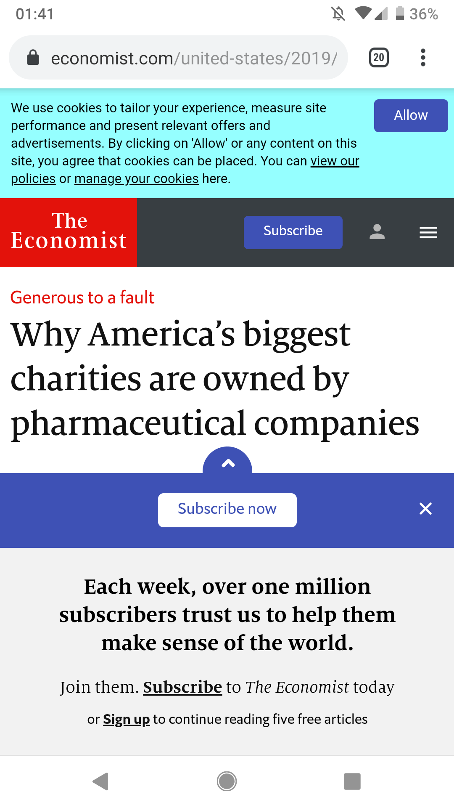

Better mobile screenshots
A useful tip when adding screenshots to posts or talks is to put them "inside" a device. This gives the screenshot some context.
Even though this screenshot already contains Android top & bottom bars, with the added outline it's immediately obvious it's from a phone.
To add the outline to images I use a simple CSS border:
.phone-border {
border: #111 solid;
border-radius: 1rem;
border-width: 2rem 1rem 3rem 1rem;
}To take this further you can also make them responsive! So we see phone screenshots on phones, and a fake laptop screen outline on big/wide screens. This assumes you are using responsive images so you get desktop aspect ratio on bigger screens.
@media (min-width: 800px and min-aspect-ratio: 16/9) {
.phone-border {
border-color: #ccc;
border-width: 1rem;
}
}